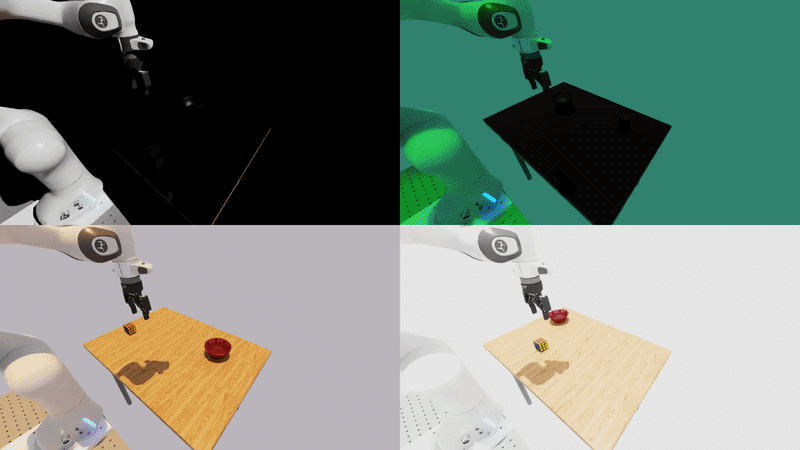
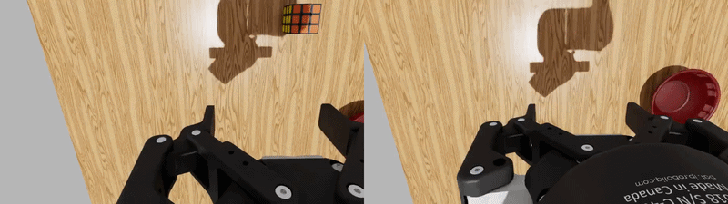
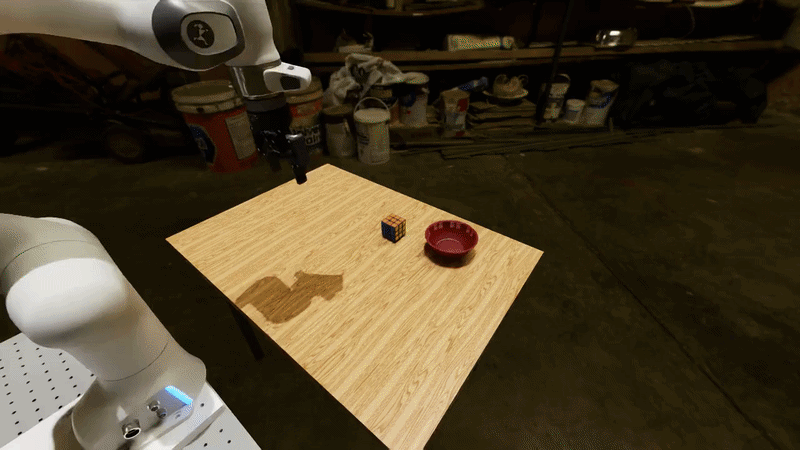
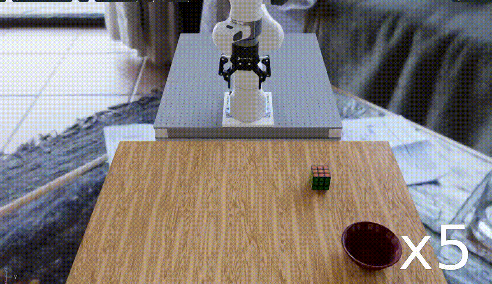

Variation System#
A variation is a controlled randomization to one part of an environment. It lets you test the same policy and task under different conditions without creating a separate environment for every case.
Imagine testing a pick-and-place policy under dim, normal, and bright lighting. The robot, objects, and task stay the same; only the light changes. That makes it easier to tell whether lighting affected the result.
{kind=link}

The results of activating several different lighting variations in the same environment. The variations are lighting direction (top-left), lighting color (top-right), lighting temperature (bottom-left), and lighting intensity (bottom-right).#
Lighting is not the only factor that can influence a policy’s performance. We also expose variations for modifying camera parameters.
{kind=link}

The results of activating several different camera-related variations in the same environment. The variations are wrist-camera intrinsics (left), wrist-camera extrinsics (right).#
The scene background can also be varied by sampling the HDR environment map used by the dome light.
{kind=link}

The result of activating the background image (HDR) variation: the same task rendered against backgrounds sampled from the HDR image library.#
See the Available variations table for a complete list of supported variations.
Why use variations?#
A policy can appear reliable when it is always tested in one familiar scene. However, small changes in lighting, camera placement, or object appearance may expose failures that a single fixed test condition cannot show.
Variations help you:
Test a policy across a set of random conditions;
Determine how sensitive the policy is to these varied conditions (covered in the next section);
Arena provides features to make introducing variations easy. In particular:
Allows you to introduce variations without duplicating the full environment definition - variations are available in all Arena-defined environments automatically; no additional code is needed to make them available; and
Arena automatically records the sampled variation value in every episode.
This is the basis for the Sensitivity Analysis that follows.
Run an Example#
The repository includes a ready-to-run variation example. It uses the DROID robot for a pick-and-place task and enables three variations:
the background image;
the light intensity; and
the wrist-camera position.
The example uses a zero-action policy, so the robot remains still while you inspect the scene. It rebuilds the environment five times, drawing a new background and light intensity for each build. The wrist-camera position is drawn when the environment resets.
Configuration file (droid_pnp_variations_experiment.yaml)
# Copyright (c) 2026, The Isaac Lab Arena Project Developers (https://github.com/isaac-sim/IsaacLab-Arena/blob/main/CONTRIBUTORS.md).
# All rights reserved.
#
# SPDX-License-Identifier: Apache-2.0
runs:
variations_demo:
environment:
type: pick_and_place_maple_table
enable_cameras: true
embodiment: droid_rel_joint_pos
policy:
type: zero_action
rollout_limit:
num_steps: 10
# Number of times the environment is rebuilt with different variation values.
num_rebuilds: 5
# The variations to enable for this run.
variations:
light.hdr_image.enabled: true
light.intensity.enabled: true
droid_rel_joint_pos.camera_extrinsics_wrist_camera.enabled: true
Start the Base Docker container from the repository root:
./docker/run_docker.sh
Then run the example inside the container:
python isaaclab_arena/evaluation/experiment_runner.py \
--viz kit \
--enable_cameras \
--experiment_config isaaclab_arena_environments/experiment_configs/droid_pnp_variations_experiment.yaml
The viewport will show the environment being rebuilt with different variation values:
{kind=link}

The droid_pnp_variations_experiment.yaml example with variation changes shown at 5x playback
speed. The wrist-camera position also changes, but that change is not visible from the
external viewport.#
Build-time and run-time variations#
Some variations are sampled before the environment is created, while others are sampled whenever each environment is reset. Arena calls these build-time and run-time variations. In this example, the background image and light intensity are build-time (redrawn on each rebuild), while the wrist-camera position is run-time (redrawn on each reset).
See Build-time and run-time variations for a full explanation of the distinction and why it matters when planning an evaluation.
Discovering available variations#
The available variations depend on the assets and embodiment in the selected environment.
Use --list_variations with the policy or experiment runner to see:
For example, to list the variations for the DROID pick-and-place environment, run:
python isaaclab_arena/evaluation/policy_runner.py \
--list_variations \
pick_and_place_maple_table
The output will look like this:
Variations (Hydra-configurable)
================================
Asset: bowl_ycb_robolab
(no variations)
Asset: directional_light
direction (LightDirectionVariation, build-time)
Enable: directional_light.direction.enabled=true (default: False)
Fields:
directional_light.direction.sampler_cfg.high = [3.14,1.4]
directional_light.direction.sampler_cfg.low = [-3.14,0.0]
intensity (LightIntensityVariation, build-time)
Enable: directional_light.intensity.enabled=true (default: False)
Fields:
directional_light.intensity.sampler_cfg.high = [2000.0]
directional_light.intensity.sampler_cfg.low = [100.0]
...
This output shows:
Which assets have variations (e.g.
directional_lightandlightdo, whiletableshows(no variations));Whether each variation is build-time or run-time (e.g.
hdr_imageis build-time, whilecamera_extrinsics_wrist_camerais run-time);The setting used to enable it (e.g.
light.intensity.enabled=true); andThe fields that control sampling (e.g.
light.intensity.sampler_cfg.low = [100.0]andlight.intensity.sampler_cfg.high = [2000.0]).
For the exact commands and configuration format, see Variations.
What Arena records#
At the end of an episode, Arena writes the exact draw from every enabled variation alongside the episode result. A record can look like this:
{
"success": true,
"variations": {
"light.hdr_image": "home_office_robolab",
"light.intensity": [1250.0],
"droid_rel_joint_pos.camera_extrinsics_wrist_camera": [0.001, -0.002, 0.0]
}
}
This link between conditions and results is the foundation of Sensitivity Analysis. Without the recorded draws, a success rate can tell you whether the policy struggled, but not which environment changes were present when it struggled.
The zero-action example on this page is intended to make the variations easy to see. In the next section, you will run the same pick-and-place task with a policy and analyze how the wrist-camera position is associated with success or failure.
Next Steps#
Now that you know how to introduce variations, you can run a Sensitivity Analysis on the results. This will be covered in the next section.